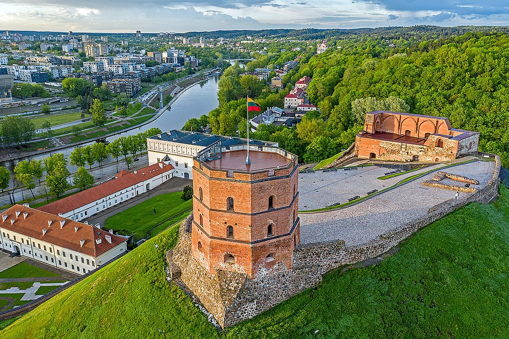
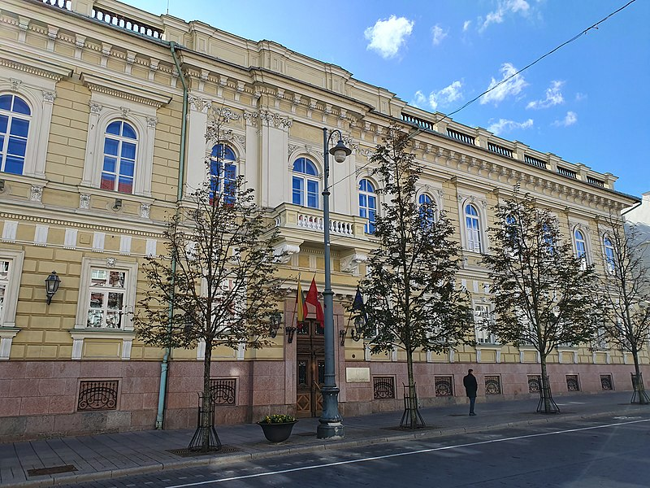
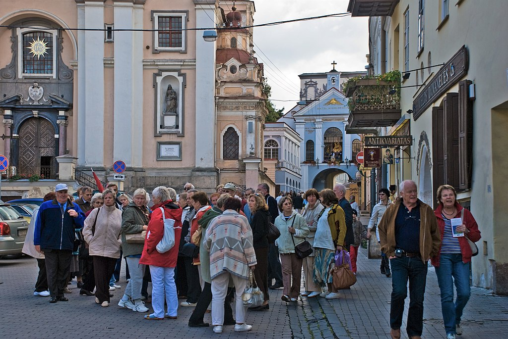

Vilnius is classified as a Gamma global city according to GaWC studies, and is known for the architecture in its Old Town, declared a UNESCO World Heritage Site in 1994. Before World War II, Vilnius was one of the largest Jewish centres in Europe. Its Jewish influence has led to its nickname "the Jerusalem of Lithuania". Napoleon called it "the Jerusalem of the North" as he was passing through in 1812. In 2009, Vilnius was the European Capital of Culture, together with Linz, Austria. In 2021, Vilnius was named among top-25 fDi's Global Cities of the Future – one of the most forward-thinking cities with the greatest potential in the World.
The city of Vilnius, the capital and largest city of Lithuania, has undergone a diverse history since it was first settled in the Stone Age. Vilnius was the head of the Grand Duchy of Lithuania right until 1795, even during the Polish–Lithuanian Commonwealth. The city has changed hands many times between Imperial and Soviet Russia, Napoleonic France, Imperial and Nazi Germany, Interwar Poland, and Lithuania. It was especially often the site of conflict after the end of World War I and during World War II. It officially became the capital of independent, modern-day Lithuania when the Soviet Union recognized the country's independence in August 1991.
Vilnius is the major economic centre of Lithuania. The GDP per capita (nominal) in Vilnius county was €25,400 (~US$30,000) in 2019, making it the wealthiest region in Lithuania and the second-wealthiest region in the Baltic states. The budget of Vilnius reached €740 million in 2021. As of beginning of 2022 the average monthly gross salary in Vilnius city municipality reached almost €2,000 per month. Since 2010, employment and unemployment indicators have continuously been improving in Lithuania. Employment reached a record high of 77.5% in the third quarter of 2018 while unemployment was 6.3% in the fourth quarter, a rate last observed in 2008. Nevertheless, this has to be seen in the context of a shrinking working age population. The activity rate reached 82% in 2017. Vilnius and Kaunas counties offer better labour market opportunities than other counties, and this drives the internal interregional migration. However, in other regions employment opportunities remain scarce. Unemployment rates remained persistently high in the least developed regions (14.9% in Utena County as compared to 4.8% in Vilnius County). Other key labour market indicators have improved, returning to pre-crisis levels. Long-term unemployment fell to 2.1% in the third quarter of 2018 (EU average: 2.9%). Youth unemployment (13.3%) and the rate of young people not in employment, education or training (NEET, at 9.1%) were below the EU average in 2017.
According to the data collected by the Lithuanian Department of Statistics, a total of 1,200,858 visitors had rented rooms in Vilnius accommodation venues where they spent a total of 2,212,109 nights in 2018. Compared to the 2017 statistics, the number of guests grew by 12% and 11% respectively. The Republic of Užupis is a tourists frequently visited micronation in Vilnius, full of Bohemian culture and art In 2018 81% of all the visitors who stayed in Vilnius were foreigners (970,577), which is 11% more than the previous year. Most foreign visitors came from Belarus (102,915), Germany (101,999), Poland (99,386), Russia (90,388) and Latvia (61,829). Guests from these countries accounted for 47% of all foreign guests, who rented rooms in Vilnius accommodation venues. Entirely, 230,281 Lithuanians (19% of all guests) were in Vilnius accommodation venues during 2018 (which is 18% more than in 2017). According to a 2018 Vilnius Visitors Survey, 48% of tourists visited Vilnius for the first time, 85% of tourists planned the trip by themselves and 15% travelled with travel agencies. According to the same survey, 40% of tourists specified that they decided to visit Vilnius in order to learn about the history and heritage of the city; however, 23% of tourists also planned trips to other areas of Lithuania (e.g. Trakai, Kaunas, Druskininkai, Šiauliai, etc.). Many Belarusians (around 200,000 granted travel visas annually) are arriving for shopping in the city's shopping malls and upon departing submits even half a meter long receipts to the customs.
